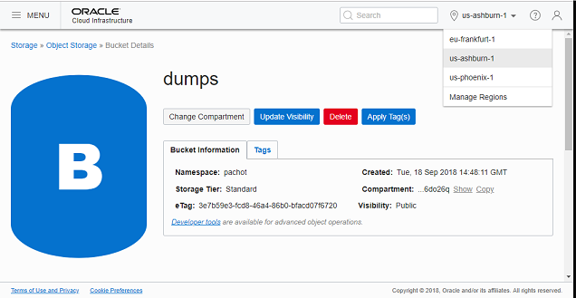
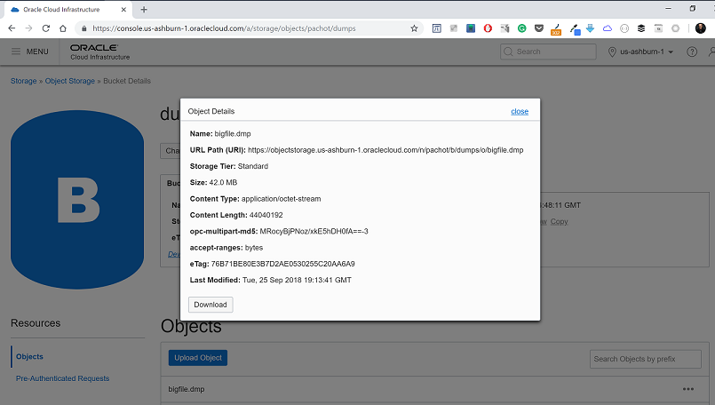

In the previous post I used a simple oci-curl() function as a Command Line Interface to the Oracle Cloud Infrastructure without installing any client tool or language. It was easy for simple things such as starting and stopping services. But it can also be more powerful because it is simply a wrapper to call the OCI REST API, simplifying the sign-in and authentication, but allowing to run any GET, POST, PUT and DELETE method.
When we are testing some Oracle Cloud Services, such as the Autonomous DataWarehouse or Bare-Metal Exadata, we need to copy some of our on-premises database: Data Pump dumps, RMAN Backups Sets, Pluggable Database Archives,... Those are lare files, and from a source where we may not want to install an OCI CLI client and its dependencies. Here is a way to upload large files through the REST API directly. The full API is documented in https://docs.cloud.oracle.com/iaas/api
I have set the environment variables and the oci-curl() function as in the previous post.
In these examples, I set all identifiers in environment variables, so that you can copy/paste the commands once you have set your environment.
Object Storage
The endpoint here is not the Database, but the Object Storage. I've run this demo on US-Ashburn-1. In addition to that, the Object Storage stores files in buckets within a namespace (associated to my tenant, and visible by all compartments). I define the environment variables:
endpoint=objectstorage.us-ashburn-1.oraclecloud.com namespace=pachot bucketName=dumps
This 'dumps' bucket is one that I've created in my 'pachot' tenant:

My goal is to upload a 42GB file that I have created locally for the test:
dd if=/dev/urandom of=/tmp/bigfile.dmp bs=1G count=42 iflag=fullblock 42+0 records in 42+0 records out 45097156608 bytes (45 GB, 42 GiB) copied, 244.742 s, 184 MB/s du -h /tmp/bigfile.dmp 43G /tmp/bigfile.dmp md5sum /tmp/bigfile.dmp dafe6cd2f121d0f630cd3e7b58a4dcd7 bigfile.dmp
PUT PutObject
I can upload the file in one PUT call using the PutObject API, mentioning the file name as object name:
file="bigfile.dmp"
oci-curl $endpoint PUT /tmp/bigfile.dmp "/n/$namespace/b/${bucketName}/o/$file"
However, with large files, I prefer to upload smaller chunks that can be uploaded in parallel. And anyway, the maximum size of one chunk is 50GB. Instead of /o in the url to manipulate objects, I will use some calls with /u for the multi-part upload. Here are the chunks that I've created for this example:
split -b 15G -d /tmp/bigfile.dmp /tmp/bigfile.dmp.Split du -h /tmp/bigfile.dmp.Split* 16G /tmp/bigfile.dmp.Split00 16G /tmp/bigfile.dmp.Split01 13G /tmp/bigfile.dmp.Split02
POST CreateMultipartUpload
With my object name in the 'file' variable I call the CreateMultipartUpload API with the POST method ( the JSON in input is '{"object":"bigfile.dmp"}' )
oci-curl $endpoint POST /dev/stdin "/n/${namespace}/b/${bucketName}/u" <<<'{"object":"'"$file"'"}'
This returns some information about the upload session:
{"namespace":"pachot","bucket":"dumps","object":"bigfile.dmp","uploadId":"790ed762-90f0-77ba-3db9-da7b34e6e05f","timeCreated":"2018-09-25T19:13:16.769Z"}
I retreive the uploadId from it as I'll need it for the further calls:
uploadId=$( oci-curl $endpoint GET "/n/${namespace}/b/${bucketName}/u" | jq -r '.[] | select(.object=="'"$file"'") | .uploadId' )
PUT UploadPart
For each chunk, I'll call the PUT method providing the uploadId and the PartNum in the URL variables:
partNum=0
for part in /tmp/bigfile.dmp.Split*
do
partNum=$(($partNum + 1))
date
oci-curl $endpoint PUT ${part} "/n/${namespace}/b/${bucketName}/u/${file}?uploadId=${uploadId}&uploadPartNum=${partNum}" &
date
done
wait
Here, I've run them in parallel. Here are the curl commands that are generated by the oci-curl() function:
/usr/bin/curl --data-binary @/tmp/bigfile.dmp.Split01 -X PUT -sS 'https://objectstorage.us-ashburn-1.oraclecloud.com/n/pachot/b/dumps/u/bigfile.dmp?uploadId=709d09bd-57b5-b1c5-224b-cd0857590ab1&uploadPartNum=2' -H 'date: Tue, 25 Sep 2018 20:27:34 GMT' -H 'x-content-sha256: YstB9QMY3jdB3DtE0EIfzl/GpXky0Jc6I9BekMJkA1s=' -H 'content-type: application/json' -H 'content-length: 16106127360' -H 'Authorization: Signature version="1",keyId="ocid1.tenancy.oc1..aaaaaaaac6guna6l6lpy2s6cm3kguijf4ivkgy5m4c4cngczztunig6do26q/ocid1.user.oc1..aaaaaaaaflzrbfegsz2dynqh7nsea2bxm5dzcevjsykxdn45msiso5efhlla/b1:fe:79:0e:fc:5d:8f:91:e4:89:4f:18:ff:3b:11:ea",algorithm="rsa-sha256",headers="(request-target) date host x-content-sha256 content-type content-length",signature="XHoj9uyrMCD6IXiPrhyFMKEuSkwDWZp8UF2hHRUda/1AcQLT7fhsI+dRdcu+pWCISCPzCTvzKE5K1+WJXkplI+ULVwwWCHo5mDM2YL3goI1FXadBo0+kFCepI8R2z+LQ3EPduh9mLAfQMrJoLEi9IkpxnrDOzK/tyUQz43JJPHZhbDhkAkSluu5N4RWCS/PcpVVGxuenfbxq4qmZxrtgAAdlFMpgIWFow7wUXgyebsTS7Vu8hWafqkGeHWWhyGkfXKw6dfYS8y+LxYWypq2gCVPkNH214z9vrbBAPXWjMNpJ/h7cH1aWcAkVgUjC+I6BioGZfZRHd4eVvvO5qM0bRQ=="'
I get it displayed, without changing the oci-curl() function, by defining the following wrapper for curl:
curl(){ set -x ; /usr/bin/curl "$@" ; set +x ; }
You see here the big advantage of this function: it builds the header required by the OCI REST API. The header date and SHA must be different after 5 minutes, and must be build from all the headers.
GET ListMultipartUploadParts
At any moment, I can list the parts that are already uploaded with a GET method:
oci-curl $endpoint GET "/n/${namespace}/b/${bucketName}/u/${file}?uploadId=${uploadId}"
This shows the part number (which we provided for the upload) and an entity tag to be sure to identify the right upload (as you can upload a chunk again if something failed for example).
Here is an example of the result formatted with 'jq' (I've run this later with a different size):
[
{
"partNumber": 1,
"etag": "76C00B7D6CE94AFBE0530255C20A8768",
"md5": "7D+viFyGUuoFBJ7PMaJvXQ==",
"size": 15728640,
"lastModified": "2018-09-26T05:52:01.960+0000"
},
{
"partNumber": 2,
"etag": "76C03EB8795A8835E0530255C20A0B2E",
"md5": "HCri4PDO9TGG4Kx26EQ97Q==",
"size": 15728640,
"lastModified": "2018-09-26T05:52:02.022+0000"
},
{
"partNumber": 3,
"etag": "76C05264EA599A77E0530255C20A0FBB",
"md5": "G1/cMWtLdB5gJ4QQ4Ggvsw==",
"size": 12582912,
"lastModified": "2018-09-26T05:52:01.443+0000"
}
POST CommitMultipartUpload
When all chunks are uploaded, I can finalize the operation with a commit of all those multi-part uploads. I need the list of them (the part number) as well as the entity tags (ETags). Then, parsing the previous output with jq, I get the list in the right format:
parts=$(
oci-curl $endpoint GET "/n/${namespace}/b/${bucketName}/u/${file}?uploadId=${uploadId}" |
jq -r '.[] | (.partNumber|tostring) + " " +.etag' | while read partNum etag
do
echo '{"partNum": '$partNum',"etag": "'$etag'"}'
done
)
This assigns the following to the parts variable:
{"partNum": 1,"etag": "76C0C87A69931B7AE0530255C20A6A74"} {"partNum": 2,"etag": "76C0860FAECFCEF2E0530255C20ACD35"} {"partNum": 3,"etag": "76C01389DDE752E7E0530255C20A1270"}
With a little AWK script I format it to the payload expected by 'partsToCommit' and write to a temporary file /tmp/commitUpload.json (you will understand later why I cannot just pipe to the oci-curl function):
echo "$parts" | awk 'BEGIN{print "{\"partsToCommit\":["}NR>1{print ","}{print}END{print "]}"}' | tee /tmp/commitUpload.json
{
"partsToCommit": [
{
"partNum": 1,
"etag": "76C0C87A69931B7AE0530255C20A6A74"
},
{
"partNum": 2,
"etag": "76C0860FAECFCEF2E0530255C20ACD35"
},
{
"partNum": 3,
"etag": "76C01389DDE752E7E0530255C20A1270"
}
]
}
Finally I POST it to commit all parts:
oci-curl $endpoint POST /tmp/partsToCommit.json "/n/${namespace}/b/${bucketName}/u/${file}?uploadId=${uploadId}"
GET ListMultipartUpload
If I don't remember which multi-part uploads are ongoing, I can list them:
oci-curl $endpoint GET "/n/${namespace}/b/${bucketName}/u" | jq
DELETE AbortMultipartUpload
The DELETE method can cancel a multi-part upload rather than commit it with POST. Here is a quick loop that I used to list all ongoing multi-part uploads and cancel each of them:
oci-curl $endpoint GET "/n/${namespace}/b/${bucketName}/u" |
jq -r '.[] | .uploadId + " " +.object' |
while read uploadId object
do
oci-curl $endpoint DELETE "/n/${namespace}/b/${bucketName}/u/$object?uploadId=$uploadId"
done
Do not leave uncommited multi-part upload for a long time because they use storage (and cloud credits).
GET ListObject
My file is now available in my Object Storage bucket.
I can list all my objects in this bucket:
oci-curl $endpoint GET "/n/${namespace}/b/${bucketName}/o" | jq
{
"objects": [
{
"name": "bigfile.dmp"
}
]
}
HEAD HeadObject
I can also check the size from the object header:
oci-curl $endpoint HEAD "/n/${namespace}/b/${bucketName}/o/$file"
HTTP/1.1 200 OK
Date: Wed, 26 Sep 2018 06:38:28 GMT
Content-Type: application/octet-stream
Content-Length: 44040192
Connection: keep-alive
Accept-Ranges: bytes
opc-multipart-md5: MRocyBjPNoz/xkE5hDH0fA==-3
Last-Modified: Tue, 25 Sep 2018 19:13:41 GMT
ETag: 76B71BE80E3B7D2AE0530255C20AA6A9
opc-request-id: 7ce12f78-0bd6-22b0-716f-07b3b1493ee5
Access-Control-Allow-Origin: *
Access-Control-Allow-Methods: POST,PUT,GET,HEAD,DELETE,OPTIONS
Access-Control-Allow-Credentials: true
Access-Control-Expose-Headers: Accept-Ranges,Access-Control-Allow-Credentials,Access-Control-Allow-Methods,Access-Control-Allow-Origin,Content-Length,Content-Type,ETag,Last-Modified,opc-client-info,opc-multipart-md5,opc-request-id
From the Web console, here is my object with all details:

As I made this bucket publicly visible, my file is downloadable from internet:
https://objectstorage.us-ashburn-1.oraclecloud.com/n/pachot/b/dumps/o/bigfile.dmp
content_length and content_sha256
If you look a what oci-curl() is doing with POST and PUT methods, you will see that it reads 3 times the file, which is not what we want when we transfer large files. this is because those methods must provide the content_length and content_sha256 headers and then the oci-curl() runs 'openssl dgst -binary -sha256 | openssl enc -e -base64' and 'wc -c' on the file. This has two bad consequences: 3x reads, and impossibility to upload from a pipe (which may be convenient when the host accessing to internet is not the same as the one accessing to the files). The documentation mentions that those 2 headers are not required for the Object Storage PUT method. This requires some modifications in the script.
Of course, in order to upload large files a better solution is the OCI CLI. I use this oci-curl() only for simple things, and also to understand and quickly test the OCI REST API. The documentation is clear about it but looking at an example, and testing it is the best way to understand.
The comments are closed on this post, but do not hesitate to give feedback, comment or questions on Twitter (@FranckPachot)